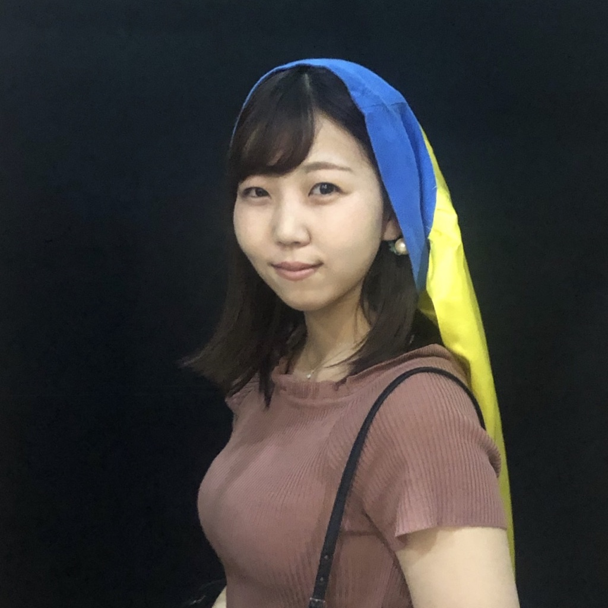

名前 ： 池上 光里
年齢 ： ２５歳
趣味 ： 旅行/映画鑑賞/読書
名前 ： 池上 光里
年齢 ： ２５歳
趣味 ： 旅行/映画鑑賞/読書
こんにちは。池上光里と申します。
岡山県に生まれ育ち、大学進学で福岡県に引っ越して約８年・・・
すっかり福岡県民です。もつ鍋とんこつラーメン大好き！
北九州市立大学文学部に在籍していました。
大学卒業後は接客業に従事していましたが、心機一転、
Webエンジニアを目指すことに。
２０２０年２月から２ヶ月間のセブ島IT留学を経て
HTML/CSS/JS/JQ/PHP を学びました。
現在は独学でデザインの勉強もしています。